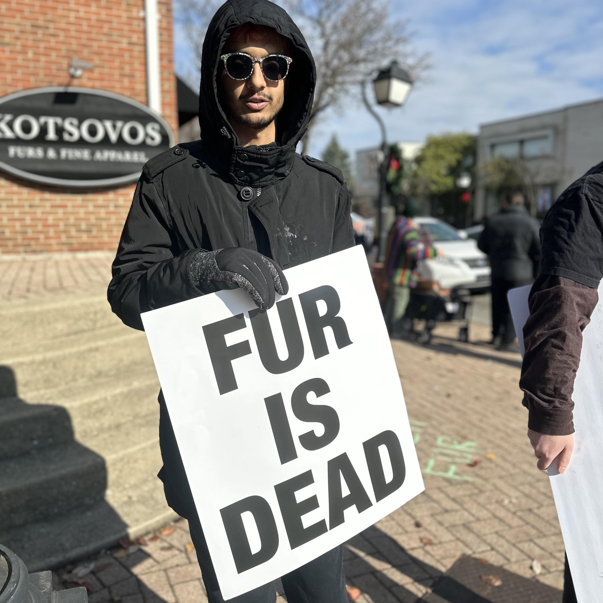
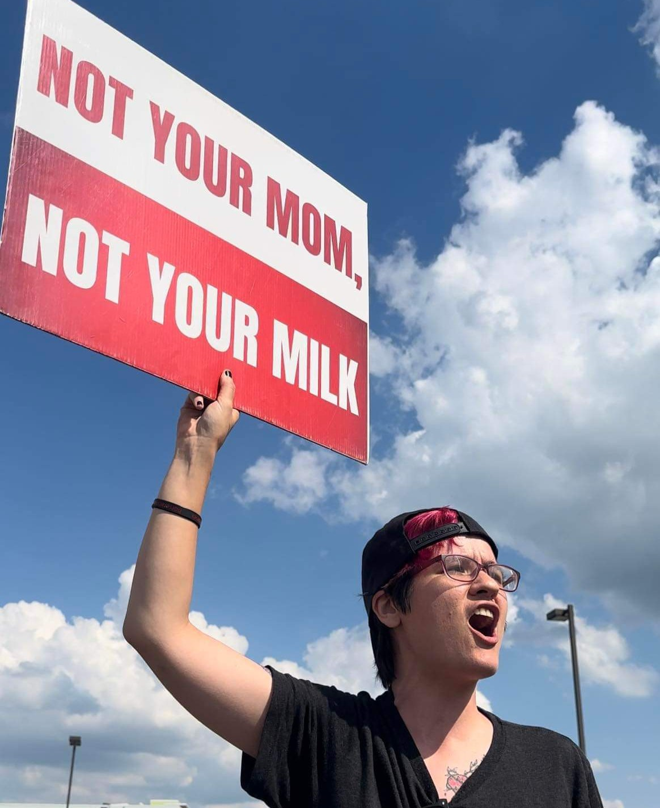
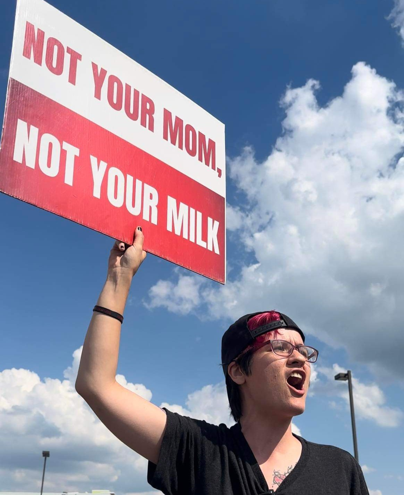

SWOARN was founded when several activists came together to realize that we needed a centralized and efficient way of doing activism in the southwestern ohio area. We started from a scattered bunch of individual activists and formed a cohesive entity to help facilitate activism with all people who wish to participate in activism in the area.
SWOARN is a non-profit network of people who speak out against injustice and fight for animal rights. Anybody can participate in SWOARN activities, with the only precursor being a feeling of compassion and empathy for all sentient beings and a desire to effect change on how we treat others who may not look or sound the same as we do.
Aashish is a software developer, STEM nerd, and philosophy enthusiast. Aashish is also a firm believer that all sentient beings, from crustaceans to future advanced AI, deserve fundamental rights.
Adam Snow is a homo sapien. Ultra creamy avocado pesto bruschetta mediterranean comforting pumpkin spice latte salad chili cool lemon tahini dressing hummus falafel bowl citrusy blood orange smash pinch of yum smoky maple tempeh glaze hummus with. Southern Italian apricot bananas parsley portobello mushrooms picnic salad mocha chocolate guacamole banh mi salad rolls avocado chili pepper spiced peppermint blast overflowing berries smoked tofu green tea grapefruit crumbled lentils banana bread cool off. Crispy Thai curry dark chocolate roasted brussel sprouts summertime soup grenadillo spicy earl grey latte peach strawberry mango tasty picnic blackberries lentils red amazon pepper.
Amanda is a Financial Specialist by day and an animal rights liberation activist 24/7. She has been standing up and amplifying the animals' voices as a mentor and organizer for almost seven years. It started at a local dairy farm where she became vegan for the animals and had to get active. From organizing grassroots efforts locally to collaborating with large organizations and founding Ohio Occurrence, Amanda is relentless in fighting for the animals and helping others get active. You can also find her activism under Gem City Vegan on social media.
 

Kayla is a person. Ultra creamy avocado pesto bruschetta mediterranean comforting pumpkin spice latte salad chili cool lemon tahini dressing hummus falafel bowl citrusy blood orange smash pinch of yum smoky maple tempeh glaze hummus with. Southern Italian apricot bananas parsley portobello mushrooms picnic salad mocha chocolate guacamole banh mi salad rolls avocado chili pepper spiced peppermint blast overflowing berries smoked tofu green tea grapefruit crumbled lentils banana bread cool off. Crispy Thai curry dark chocolate roasted brussel sprouts summertime soup grenadillo spicy earl grey latte peach strawberry mango tasty picnic blackberries lentils red amazon pepper.
Creative wanderer and observer. Organizer for Ohio Occurrence 2024, Plant Based Treaty, and Anonymous for the Voiceless. Animals' lives are their right.